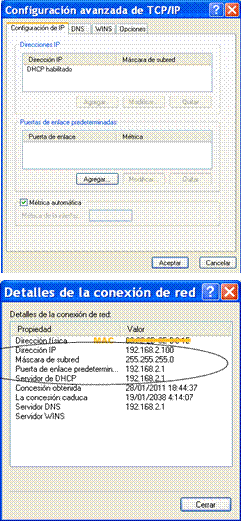
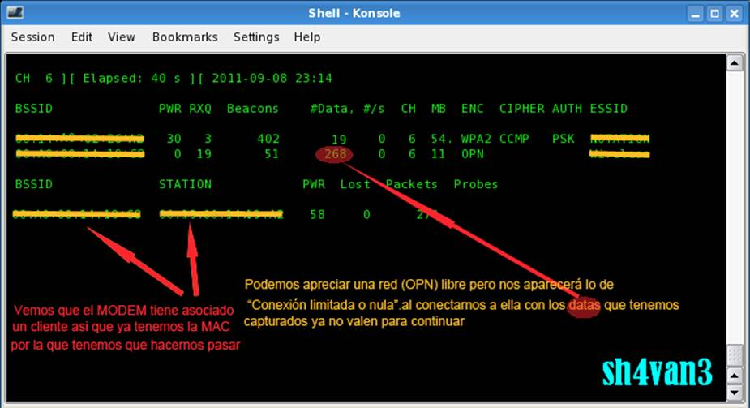
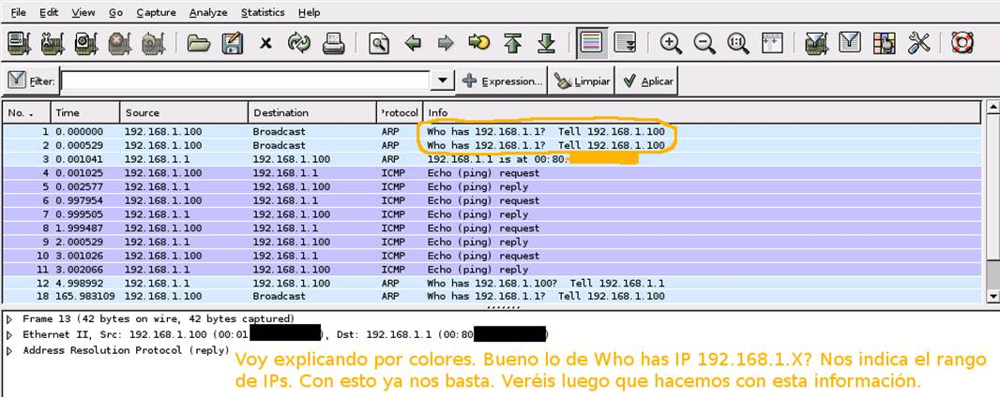
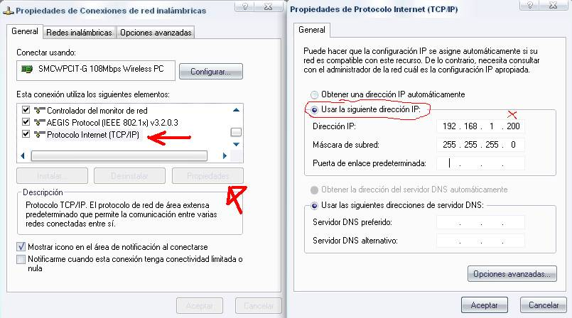
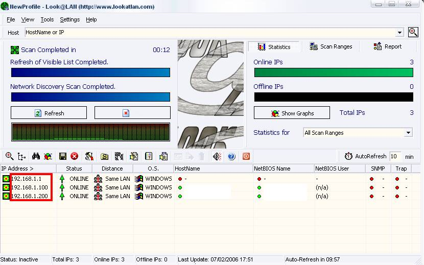

Solución a DHCP desactivado

Si un MODEM tiene el DHCP deshabilitado, quiere decir que no nos asignará las Ips automáticamente, es decir, que nos aparecerá lo de “Conexión limitada o nula”.Es raro ver este tipo de seguridad en una red, y es relativamente fácil saltarla auque resulta laboriosa, pero explicaremos como se pueden ver los rangos de las IP.
A la derecha se muestran 2
imágenes en Windows con las DHCP habilitadas que es lo normal, en este caso se nos
asignará las Ips automáticamente
DHCP (Dynamic Host Configuration Protocol)
Protocolo de Configuración Dinámica del Host. Este protocolo si esta habilitado “que es lo normal” nos permite que un servidor asigne automáticamente las direcciones IP, Mascara y Puerta de enlace, a los ordenadores clientes conforme estos las van necesitando. Existen tres estados
Autenticado y asociado
Estado en el que un dispositivo
wireless se une a la red de forma correcta y puede participar de los servicios
que se ofrecen, te permite conectarte a Internet.
Autenticado y desasociado
Estado en el que un cliente ha sido reconocido por los dispositivos de la red wireless pero que todavía no puede emitir datos ni participar de los recursos. No hay acceso a Internet "Conectividad limitada o nula".
Desautentificado y desasociado
Estado en el que un cliente está desconectado de la red y no se asoció con el Punto de Acceso.
1º Captura de datos
Abrimos por ejemplo el airodump y capturamos un poco de tráfico de la red

2º Desencriptación de los datos
Si la red tiene WEP, primero hay que descifrar los DATOS,
Para ello usaremos el
airdecap
airdecap -w CLAVEENHEXADECIMALSINPUNTOS archivo.cap
3º Abrimos el archivo con
ethereal
Si la red no tenía protección abrimos directamente el archivo que nos da el
airodump, si tenía abrimos el que nos da el airdecap (el mismo nombre pero acabado en
-dec).

Buscamos rangos de Ips. A mí ya directamente me aparecen los correctos, 192.168.1.1 es el MODEM y 192.168.1.100 es el adaptador wifi que esta asociado a MODEM.
4º Nos vamos a Windows y configuramos.
Vamos a configuración de red en el panel de control, elegimos nuestra tarjeta y propiedades. Luego procedemos tal como indica el dibujo.

En IP, ponemos cualquiera dentro del rango, yo puse 192.168.1.200. La máscara de red no la ponemos, ya nos la pone el Windows automáticamente según la IP que pongamos. Abrimos el Look@lan, y veremos varias direcciones IP. La 192.168.1.1 es el MODEM y las otras dos son los adaptadores asociados, entre ellos el mío 192.168.1.200

Viendo que el MODEM es el 192.168.1.1 volvemos a las propiedades de protocolo Internet y en la puerta de enlace predeterminada ponemos la IP del MODEM es decir 192.168.1.1
Lo único que falta es colocar las DNS. Se colocan probando, no hay otra manera.
Estas dependen del operador que nos suministra el servicio, hay en Internet paginas que nos indican las de cada operador, así que a utilizar Google.